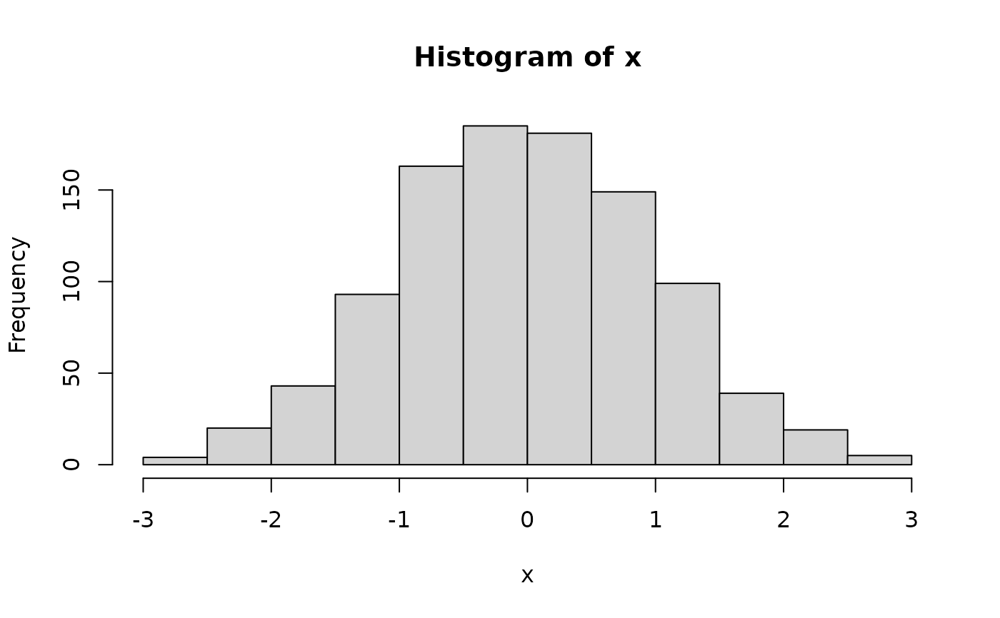

add additional detail to the stored object for a graph
AugmentMethod.RdCreates the necessary details that feed into the text descriptions in the VI() function and into the descriptions used in the accessible online versions of the graphs.
Arguments
- x
a graph object for which a method exists, or the current graphics device if set to NULL.
Examples
x=rnorm(1000)
MyHist=Augment(hist(x))

MyHist
#> $breaks
#> [1] -3.5 -3.0 -2.5 -2.0 -1.5 -1.0 -0.5 0.0 0.5 1.0 1.5 2.0 2.5 3.0 3.5
#>
#> $counts
#> [1] 1 2 12 49 89 156 189 182 164 84 49 16 5 2
#>
#> $density
#> [1] 0.002 0.004 0.024 0.098 0.178 0.312 0.378 0.364 0.328 0.168 0.098 0.032
#> [13] 0.010 0.004
#>
#> $mids
#> [1] -3.25 -2.75 -2.25 -1.75 -1.25 -0.75 -0.25 0.25 0.75 1.25 1.75 2.25
#> [13] 2.75 3.25
#>
#> $xname
#> [1] "x"
#>
#> $equidist
#> [1] TRUE
#>
#> $ExtraArgs
#> $ExtraArgs$main
#> [1] "Histogram of x"
#>
#> $ExtraArgs$xlab
#> [1] "x"
#>
#> $ExtraArgs$ylab
#> [1] "Frequency"
#>
#> $ExtraArgs$sub
#> [1] ""
#>
#>
#> $NBars
#> [1] 14
#>
#> $par
#> $par$xaxp
#> [1] -3 3 6
#>
#> $par$yaxp
#> [1] 0 150 3
#>
#>
#> $xTicks
#> [1] -3 -2 -1 0 1 2 3
#>
#> $yTicks
#> [1] 0 50 100 150
#>
#> attr(,"class")
#> [1] "Augmented" "histogram"